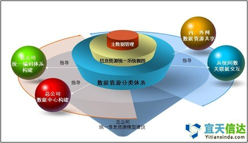

咨询邮箱：service@yitianxinda.com
咨询邮箱：service@yitianxinda.com
 咨询热线：400-668-3065
咨询热线：400-668-3065

 咨询邮箱：service@yitianxinda.com
咨询热线：400-668-3065
咨询邮箱：service@yitianxinda.com
咨询热线：400-668-3065

 所属行业：
所属行业：
服务内容：
成果摘要：
1 资金有限，难以推动信息化建设持续发展
企业信息化是一个 长期性的系统工程，需要持续的资金支撑，而成百上千万的投入也未必能立竿见影。如果在信息化方面的投入没能立即给企业带来相应的效益增加和效率提升，企业 决策者无疑要背负很大的压力，因此令许多企业在信息化投入方面慎之又慎。
2 技术力量有限，难以推动信息化建设广泛开展
施工企业一般都存 在信息技术人才数量不多、水平有限的问题。要针对企业的业务实际定制个性化的管理信息系统，在技术和服务方面都难以得到可靠的保证。同时企业普通员工由于 专业上的侧重点不同，对网络信息化的理解有限，使用计算机和网络开展工作的技能也有待提高。
3 信息化管理水平不高，难以保证信息化建设高效实施
企业信息化离不开资金投入与技术创新，同时也与企业的业务流程、组织结构、管理制度等方方面面密切相关。而要提高企业信息化管理的水平，必须使企业的管 理制度、组织结构、业务流程等进行改革和梳理，使之与信息化建设的要求相适应。 4 传统观念影响太深，计算机网络尚未得到充分的利用
传统 的办公方式仍然占据着重要的位置。文件、通知等的上传下达大多借助于电话、传真、打印等手段，许多环节还需要人工来完成，为了保证公文流转的准确性和可靠 性，需要工作人员付出大量的时间和精力，同时还要消费相当数量的办公耗材。由于计算机网络的作用没有得到充分的发挥，也造成了人力、物力、财力的浪费。

3 企业加快信息化建设的对策
1 立足于企业实际，制定合理计划。
在建设计算机网络时，需要从公司整体考虑，统一规划，统一管理，避免造成各部门，各项目部成为“信息孤岛”，使信息资源不能互通，不能共享，同时要防止无论是硬件还是软件上的重复建设，重复投资，使有限的人力、物力、和财力能够充分发挥作用。
为此，需要从公司实际情况出发，制定科学的计划，既要重视近期建设，仔细研究“战术”，把工作做到实处；也要考虑长期发展，认真思考“战略”，确保可持续发展。
2 提高员工整体素质，加强信息化意识，充分发挥计算机网络优势
一套实用可靠，安全高效的计算机网络系统，对于一个组织而言，无论在决策、计划、领导、控制等各个阶段，都是一种重要的、有效的手段。它能够帮助各级领导制定决策，分析形势，也可以辅助各级管理人员开展工作，解决问题。
加强对广大员工的计算机操作技能以及基础知识的培训，可以帮助大家提高工作效率，从繁琐的传统办公方式解脱出来，同时增进大家对新技术的兴趣，使大家在新的工作环境和新的合作方式下愉快的工作。
加强公司员工的信息化意识，使大家认识到信息化并不是几套软件，几台设备，更是一种观念和思想，不可能一劳永逸，也不可能尽善尽美，只有我们的本身的工 作方式更加规范了，业务流程更加清晰了，管理思路更加科学了，信息化才能真正为我们发挥作用。为此，在工作中应当多思考、多分析，一方面要强调操作规范， 一方面要优化业务流程，同时大胆采用先进的技术，主动改进落后的的工作方式。
提高企业全体人员的计算机水平和信息化意识，也是为日后大家都能有效参与到建设、使用和推广较为复杂的管理信息系统打下一个良好的基础。
3 加强技术力量，推动信息化建设
要推动企业信息化建设，足够的技术保障必不可少。企业应采取多种措施加强科技队伍的建设。一方面可以吸收专门人才加入企业，充实技术力量；一方面可以选 送现有技术人员参加相关的学习和培训，提高知识水平，培养出一支具有计算机专业知识的技术过硬的科技队伍，只有企业自身掌握了一定的计算机网络技术，才能 使信息化建设得到基本的技术保障。另外，还可以与专业的计算机网络公司建立合作的关系，充分利用他们的科研成果和技术专长，为企业提供更为广泛有力的技术 支持，有力地推动信息化建设。 4 实行规范管理，保证计算机网络良好的运行
计算机网络既有它快捷、高效的一面，也面临着不少隐患和来自多 方面的威胁，软、硬件故障、病毒破坏、网络攻击都是我们不得不面对的问题。为了保证计算机网络能够正常运转，保护计算机数据的安全，使网络系统在工作中充 分的发挥作用，应当对其进行规范的管理，增强所有工作人员按规范使用计算机网络的意识。
例如：对于操作人员，既要强调工作效率也要重视数据 安全，既要加强信息共享的意识，也要明确数据保密的观念，日常工作中要爱惜电脑，注意保持设备清洁，按正常的步骤操作，定期整理文档，及时做好备份，防止 泄密等等；对于工作中信息的采集，录入和传递，要规范流程，明确责任人、工作对象和发生时间，记录好信息处理的流程，保证数据能够及时、有效、安全的在计 算机网络中流转；对于网络机房、网络设备间，要具备良好的防火、防雷、防断电、防泄密、防突发灾害等保护措施，同时要有良好的环境卫生条件。
实行规范化管理，既是为了保证现有系统能够正常运转，也是为进一步拓展计算机网络在公司各业务领域的应用范围打下基础。
4 企业加快信息化建设的方案
1 结合公司实际，明确网络建设目标
在网络基础建设方 面，企业应当根据自身的实际情况认真规划、合理投资，建立与本公司事业发展相适应的企业级信息平台；以适用、及时的数字和文字信息为基础，以客观科学的分 析为手段，为公司日常工作及重大决策提供信息支持，实现机关公文处理的自动化、电子化和网络化，并为企业及社会提供适度的信息服务。 2 合理选型，制定组网方案 2.1 硬件设备选型
(1)服务器：要建立完备高效的局域网信息平台，需配置专用服务器，比如数据库服务器，Web服务器，应用服务器以及数据备份设备。在服务器的选择上，要考虑高可靠性、高性能、高吞吐能力、大存储容量的网络服务器。
(2)网络设备：网络的核心使用三层交换机连接各主要网络设备，分支机构通过vpn路由器接入，公司总部各部门通过二层交换机接入，网络设备数量根据实际终端的台数来确定。
(3)设备安全保障系统：要保证机房系统设备的安全及使用寿命，应当对机房进行装修布局，保证设备良好散热，并进行防雷地线的安装。 3 结合实际，加强网络应用 3.1 OA办公系统
以公文处理和机关事务管理为核心，建立内部办公系统，同时提供信息通讯与邮件服务等功能，包括内部办公的各种应用，从而实现内部办公的网络化、自动化和无纸化。
①支持内部电子邮件系统
电子邮件是当今网络中极为重要并被广泛采用的通信手段之一，为提高办公效率，保证内部信息的安全传递。应当首先建成用于公司局域网内部传递文件的邮件系统。邮件系统主要包含如下功能：
(1)基于Web界面的邮件收发：客户端使用浏览器即可收发邮件，使用方便；
(2)邮件转发功能：满足局域网内部信息的上传、下达；
(3)邮件回复功能：及时对重要信息作出反应；
(4)地址簿支持：可以方便的进行地址查询；
(5)邮件空间自由设定：可以为每个用户提供较大的邮件空间。
②支持基于工作流程的公文处理系统
OA系统将包括公文管理、信息发布、请示报告管理、档案管理、会议管理等等方面应用，将传统的手签、人送的公文流转和处理方式全部自动化，网络化，公文 一般都在内部网络中流动，并按照指定的工作流程传递给相关的领导或工作人员，不仅节省了工作时间，提高了效率，而且节约了纸张，降低了办公成本。
③支持协同办公和移动办公
在传统办公中，工作人员为了能交流意见和讨论问题常常需要将大量时间和费用花费在飞机、轮船或者电话、信件上。随着内部办公系统的建立，传统的协同办公 方式可以被如电子邮件、即时通讯软件等取代，它们打破了时间、地域的限制，使工作人员可以随时随地参加到协同工作中去，出差在外的员工以及项目的工作人 员，也可以及时的登录到公司的内部网络，获取相关的信息，及时的与后方交流意见，交换信息，极大的提高了工作效率。 3.2 架设企业网站
通过网站展示企业形象、发布企业信息已经成为信息时代企业上网的主要目的之一：
(1)为公司申请专有域名。域名被誉为“企业的网上商标”，具有类似于产品商标和企业标识物的作用，一个企业如果想通过互联网展示形象，发布信息，必须首先注册一个域名。
(2)设计制作企业网站，用于公司的对外宣传，向社会发布本公司的相关信息。 3.3 管理信息系统
企业管理信息系统是为企业各项业务工作提供信息技术支持的计算机系统。企业的现代化建设离不开现代化的管理信息系统。公司需要逐步建立起符合公司实际、满足公司发展需要的管理信息系统，辅助领导决策，对公司各项业务以及项目部进行科学的管理，提升公司整体管理水平。
企业级的管理信息系统建设是一项复杂的工程，它需要企业自身有完善的管理制度，良好的经营状况，还要同时满足功能完备、快速高效、安全可靠、便于扩充等 各方面的要求，而且存在着投资较大，有一定风险和需要长期投资的问题，所以应当结合公司实际情况考虑，在做好充分准备的基础上开展此项工作。
计算机网络是为了在企业中开展信息化工作的各项应用而搭建的电子平台，计算机网络的建设，不可能也无法“一蹴而就”，它伴随着企业的发展，和企业一同成 长，同时也只有把它与公司各项实际业务结合起来才能发挥出巨大的作用。在计算机网络建设中积极创新，加快信息化的发展，能够促进公司的管理创新、技术创新 和制度创新，可以提高管理水平，降低管理成本，从而全面提升企业核心竞争力，在市场竞争中确立更大的优势。